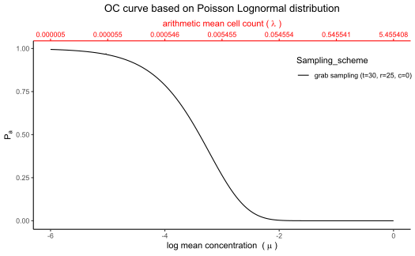

oc_plan provides the Operating Characteristic (OC) curve for known microbiological distribution such as lognormal. The probability of acceptance is plotted against mean log10 concentration.
oc_plan(c, r, t, distribution, K, m, sd)acceptance number
number of primary increments in a grab sample or grab sample size
number of grab samples
what suitable distribution we have used such as 'Poisson gamma' or 'Lognormal' or 'Poisson lognormal'
dispersion parameter of the Poisson gamma distribution (default value 0.25)
microbiological limit with default value zero, generally expressed as number of microorganisms in specific sample weight
standard deviation of the lognormal and Poisson-lognormal distributions on the log10 scale (default value 0.8)
Operating Characteristic (OC) curve
Based on the food safety literature, mean concentration is given by \(\lambda = 10^{\mu+log(10)\sigma^2/2}\).
c <- 0
r <- 25
t <- 30
distribution <- 'Poisson lognormal'
oc_plan(c, r, t, distribution)
